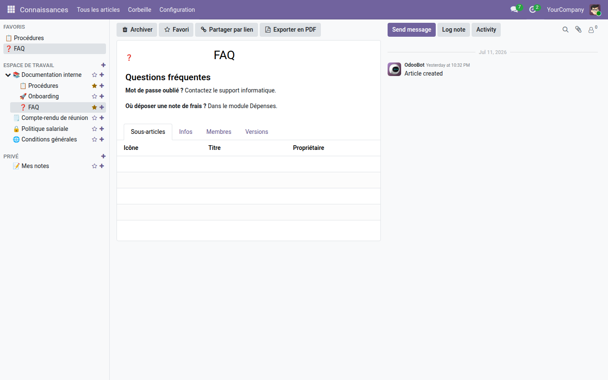

Une base de connaissances hiérarchique pour toute l'équipe — articles illimités, éditeur riche natif, espace partagé et espace privé, gratuite dans Odoo Community.
Le module Knowledge d'Odoo est réservé à l'édition Enterprise depuis la v16 : sur Community, les procédures internes, les modes opératoires et les notes d'équipe finissent dispersés entre pièces jointes, notes personnelles et documents externes — introuvables et jamais à jour. Cette application reconstruit une base de connaissances complète pour Odoo 19 Community, sans dépendance externe.
La sidebar Connaissances — l'arbre d'articles à gauche, le contenu édité à droite, sans quitter l'écran.

Pas de commentaires ancrés dans le texte, pas de propriétés ni de champs personnalisés, pas de vues ou d'items embarqués, pas de couverture image sur l'article, pas de glisser-déposer dans la sidebar (le déplacement d'un article se fait par bouton). Les permissions fines par article, le partage public par lien, l'historique de versions, les modèles d'articles et l'export PDF sont dans l'édition Pro.
Associez cette base de connaissances au module Documents — GED (oski_dms) pour classer vos fichiers en espaces cloisonnés, et à Connaissances — Édition Pro (oski_knowledge_pro) pour les permissions par article, le partage public et l'historique de versions. Voir la suite complète sur apps.odooskills.com.
Application gratuite, licence LGPL-3 — compatible Odoo 19.0 Community & Enterprise. Aucune dépendance externe. Support : support@odooskills.com.